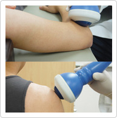

Curable diseases

- Knees - knee pain(degenerative arthritis), shin bone pain, chronic knee pain
- Shoulder -calcific tendinitis, Frozen shoulder, tendon tear, chronic shoulder pain
- Wrist - carpal tunnel syndrome, chronic wrist pain
- Elbow - tennis/golf elbow, osteochondritis, chronic elbow pain
- Foot - sole pain (plantafasciitis), Achilles tendon arthritis